Hemostasia y Trastornos de Coagulación
Equipo 6
🩸 ¿Qué es la Hemostasia?
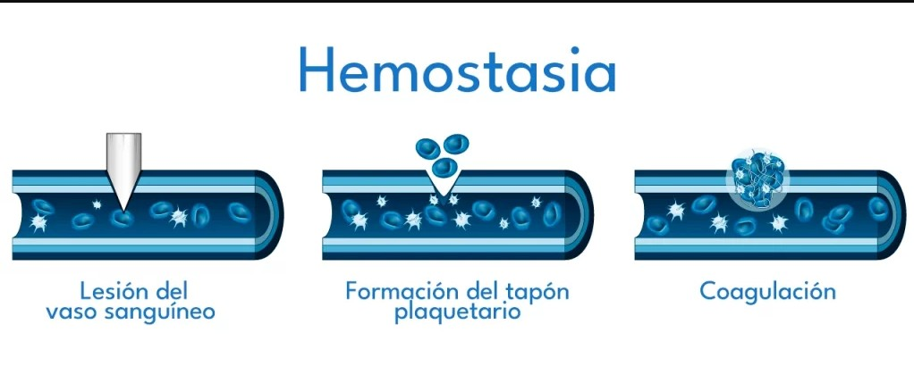
La hemostasia es el proceso fisiológico por el cual el cuerpo detiene un sangrado tras una lesión en un vaso sanguíneo. Tiene cuatro fases principales:
1. Vasoconstricción
- Es la contracción del vaso sanguíneo lesionado para reducir el flujo de sangre en la zona.
- Ocurre de forma inmediata.
2. Hemostasia primaria (formación del tapón plaquetario)
- Las plaquetas se adhieren al colágeno expuesto del endotelio lesionado (con ayuda del factor von Willebrand).
- Se activan y liberan sustancias que atraen más plaquetas.
- Se forma un tapón plaquetario inestable.
3. Hemostasia secundaria (coagulación)
- Ocurre la coagulación propiamente dicha: una serie de reacciones en cascada activan factores de coagulación que convierten el fibrinógeno en fibrina.
- La fibrina estabiliza el tapón plaquetario, formando un coágulo sólido.
4. Fibrinólisis
- Después de que el vaso sana, se activa un sistema para disolver el coágulo: la plasmina degrada la fibrina.
- Esto restaura el flujo sanguíneo normal.
🧬 ¿Qué es la Coagulación?
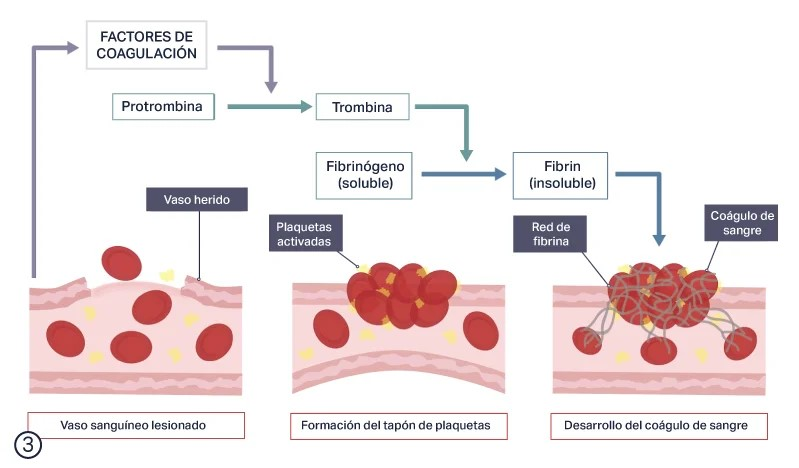
La coagulación es la tercera fase de la hemostasia, donde se forma una red de fibrina que refuerza el tapón plaquetario. Involucra dos vías:
Vía Intrínseca
- Se activa por contacto de la sangre con superficies cargadas negativamente (como colágeno).
- Factores involucrados: XII, XI, IX, VIII.
Vía Extrínseca
- Se activa por el factor tisular (TF) liberado desde células lesionadas.
- Principal factor: VII.
Ambas vías convergen en la vía común:
- Activación del factor X → convierte la protrombina en trombina, que luego convierte el fibrinógeno en fibrina.
🧪 Factores de Coagulación (I al XIII)
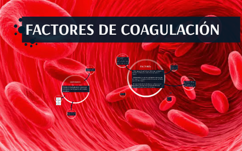
| Factor | Nombre |
|---|
| I | Fibrinógeno |
| II | Protrombina |
| III | Tromboplastina (Factor tisular) |
| IV | Calcio |
| V | Lábil |
| VII | Estable |
| VIII | Antihemofílico A |
| IX | Antihemofílico B (Christmas) |
| X | Stuart-Prower |
| XI | Antecedente tromboplástico plasmático |
| XII | Hageman |
| XIII | Estabilizador de fibrina |
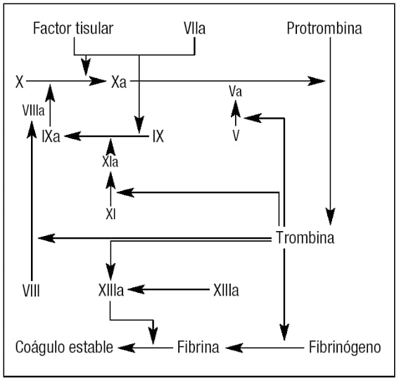
🩺 Trastornos relacionados
- Hemofilia A: déficit del factor VIII.
- Hemofilia B: déficit del factor IX.
- Enfermedad de von Willebrand: defecto en el factor que une plaquetas al endotelio.
- Trombosis: formación anormal de coágulos.
- Coagulopatía: alteraciones en la coagulación (hereditarias o adquiridas).
📌 Importancia clínica
- Evita hemorragias descontroladas.
- Ayuda en la reparación tisular.
- Un desequilibrio puede causar hemorragias o trombos peligrosos (como embolias o infartos).
🧬 Disfunciones Plaquetarias Congénitas
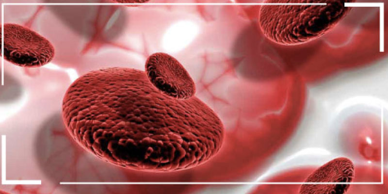
Son trastornos hereditarios en los que las plaquetas están presentes en cantidad normal, pero no funcionan correctamente, lo que provoca sangrados anormales.
🔍 Clasificación principal:
1. Defectos en la adhesión plaquetaria
- Enfermedad de von Willebrand: defecto en el factor vWF que impide que las plaquetas se adhieran al endotelio.
- Síndrome de Bernard-Soulier: ausencia del receptor GPIb-IX-V que impide unión al vWF.
2. Defectos en la agregación plaquetaria
- Tromboastenia de Glanzmann: ausencia del receptor GPIIb/IIIa; impide la unión del fibrinógeno entre plaquetas.
3. Defectos en la secreción (liberación de gránulos)
- Alteraciones en la liberación de ADP, serotonina, etc., que impiden la amplificación de la respuesta plaquetaria.
🩺 Manifestaciones clínicas
- Sangrados mucocutáneos (encías, nariz, menstruaciones abundantes).
- Hematomas fáciles.
- Sangrados prolongados tras cirugías o extracciones dentales.
🧪 Diagnóstico
- Tiempo de sangrado prolongado.
- Pruebas de agregación plaquetaria anormales.
- Estudio genético o inmunológico específico según el caso.
💉 Tratamiento
- Evitar medicamentos antiagregantes (aspirina).
- Transfusión de plaquetas en casos severos.
- Desmopresina (DDAVP) en enfermedad de von Willebrand leve.
🩸 Disfunciones Plaquetarias Adquiridas
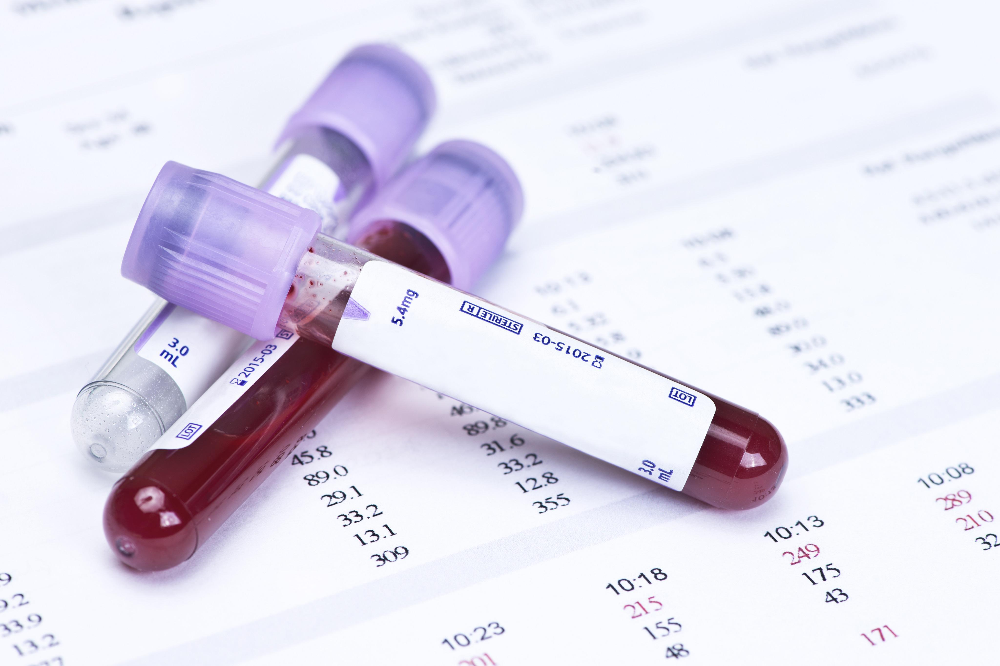
Son alteraciones de la función de las plaquetas que no son hereditarias, sino que aparecen como consecuencia de enfermedades, medicamentos u otras condiciones.
🔍 Causas principales:
- Fármacos: Aspirina y AINES inhiben la COX y bloquean la formación de tromboxano A2. Clopidogrel y ticlopidina bloquean receptores ADP.
- Uremia: En insuficiencia renal crónica, las toxinas interfieren con la función plaquetaria.
- Enfermedades hematológicas: Leucemias, linfomas, mielodisplasias.
- Cirrosis hepática: Se asocia a trombocitopenia y alteraciones en factores plasmáticos que afectan la función plaquetaria.
- Síndrome mielodisplásico o aplásico: Genera plaquetas disfuncionales.
- Infecciones graves y sepsis: Inflamación sistémica daña las plaquetas.
🩺 Manifestaciones clínicas
- Sangrado fácil: nariz, encías, petequias.
- Hemorragias prolongadas tras procedimientos.
- Sangrados gastrointestinales o menorragias.
🧪 Diagnóstico
- Historia clínica (uso de medicamentos).
- Pruebas de función plaquetaria (tiempo de sangrado, agregometría).
- Estudios de la enfermedad de base (uremia, hepatopatía, etc.).
💉 Tratamiento
- Suspender el medicamento causante, si es posible.
- Tratar la enfermedad subyacente.
- Transfusión de plaquetas o desmopresina en casos graves (DDAVP).
🩸 ¿Qué son las Coagulopatías?
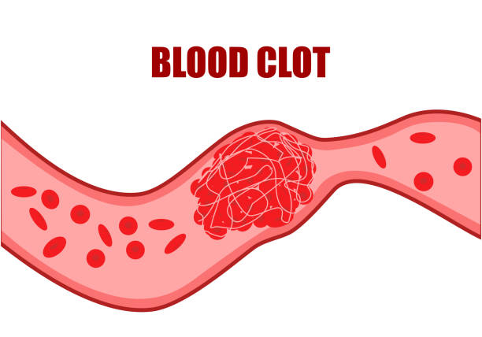
Las coagulopatías son trastornos que afectan el proceso normal de coagulación de la sangre, lo que puede llevar a hemorragias excesivas o, en algunos casos, trombosis. Se deben a déficit o disfunción de los factores de coagulación.
🔍 Clasificación:
1. Congénitas (hereditarias)
- Hemofilia A: Déficit del factor VIII, Herencia ligada al cromosoma X, Sangrados musculares y articulares frecuentes.
- Hemofilia B(Enfermedad de Christmas): Déficit del factor IX Clínica similar a la Hemofilia A, Afecta tanto a la adhesión plaquetaria como al factor VIII.
- Enfermedad de von Willebrand: Déficit o defecto del factor vWF.
2. Adquiridas
- Déficit de vitamina K: Afecta factores II, VII, IX y X.
- Enfermedad hepática: Afecta producción hepática de factores.
- Coagulación intravascular diseminada (CID): Activación masiva de la coagulación con sangrado y trombosis.
- Uso de anticoagulantes: Heparina, warfarina, DOACs (apixabán, rivaroxabán).
🧪 Diagnóstico
- TP (Tiempo de Protombina), TTPa (Tiempo de Tromboplastina parcial Activado).
- Recuento plaquetario.
- Fibrinógeno, dímero D.
- Estudios específicos de factores.
💉 Tratamiento
- Reemplazo del factor deficiente.
- Vitamina K.
- Crioprecipitados o plasma fresco congelado.
- Tratar la causa base.
🩸 ¿Qué es la Hemofilia?
La hemofilia es una enfermedad hemorrágica hereditaria en la que hay una deficiencia o ausencia de uno de los factores de coagulación, lo que provoca sangrados prolongados y dificultad para detener las hemorragias. Afecta principalmente a varones, ya que se transmite por herencia ligada al cromosoma X. Las mujeres suelen ser portadoras.
🧬 Tipos
- Hemofilia A: Deficiencia de factor VIII.
- Hemofilia B (Christmas): Deficiencia de factor IX.
🩺 Síntomas
Los síntomas dependen del grado de deficiencia del factor, pero los más comunes incluyen hematomas frecuentes, sangrados prolongados tras cortes, extracciones dentales o cirugías, y hemorragias internas espontáneas, especialmente en articulaciones (hemartrosis) como rodillas, codos y tobillos, que pueden causar daño articular crónico. También pueden ocurrir sangrados musculares y, en casos graves, hemorragias cerebrales o abdominales.
- Hematomas frecuentes.
- Sangrados prolongados o espontáneos (articulaciones, músculos, cerebro).
🔬 Diagnóstico
- TTPa prolongado con TP normal.
- Dosificación de factores.
- Historia familiar.
El diagnóstico se realiza mediante pruebas de coagulación, donde se encuentra un tiempo de tromboplastina parcial activado (TTPa) prolongado, con tiempo de protrombina (TP) normal. La confirmación se hace midiendo directamente los niveles del factor VIII o IX en sangre. Además, se considera la historia clínica y familiar.
💉 Tratamiento
- Administración del factor deficiente.
- Desmopresina (DDAVP) en hemofilia A leve.
- Evitar AINES y aspirina.
⚠ Complicaciones
- Anticuerpos contra el factor (inhibidores).
- Daño articular crónico.
Una complicación importante es el desarrollo de anticuerpos (inhibidores) contra el factor administrado, lo que reduce la eficacia del tratamiento. Otra complicación frecuente en pacientes mal controlados es el daño articular progresivo debido a hemorragias repetidas en las articulaciones.
🩸 ¿Qué es la enfermedad de von Willebrand?
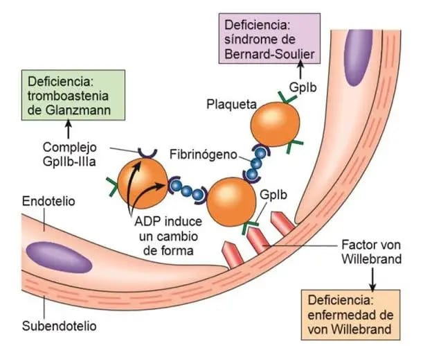
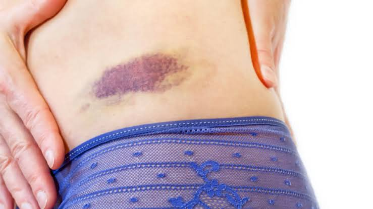
La enfermedad de von Willebrand (EvW) es el trastorno hemorrágico hereditario más común, causado por la deficiencia o disfunción del factor von Willebrand (vWF), una proteína esencial para la adhesión plaquetaria y para proteger al factor VIII de la degradación.
A diferencia de la hemofilia, afecta por igual a hombres y mujeres y suele presentarse con sangrados mucosos.
🧬 Causas
Es causada por mutaciones en el gen del factor von Willebrand. Existen tres tipos principales:
- Tipo 1: Deficiencia parcial (leve).
- Tipo 2: Disfunción cualitativa (moderado).
- Tipo 3: Ausencia total (grave).
🩺 Síntomas
Los síntomas varían según el tipo y gravedad, pero los más comunes son:
- Sangrados mucosos, epistaxis, menorragia.
- Sangrados postquirúrgicos o dentales.
- En mujeres: menstruaciones muy abundantes (menorragia)
- En casos graves puede haber sangrados articulares similares a los de la hemofilia.
🧪 Diagnóstico
- Tiempo de sangrado prolongado.
- TTPa prolongado si hay deficiencia de factor VIII.
- Niveles bajos o disfuncionales de vWF.
- Historia clínica de sangrado
- Pruebas de Laboratorio
- Niveles de factor VIII (pueden estar bajos)
💉 Tratamiento
Depende del tipo y gravedad:
- Desmopresina (DDAVP) estimula la liberación del vWF almacenado en el endotelio. Útil en tipo 1 y algunos casos del tipo 2.
- Concentrados de vWF + FVIII en casos moderados o graves.
- Ácido tranexámico (para prevenir sangrados en mucosas.).
Evitar medicamentos que alteren la función plaquetaria (aspirina, AINES).
⚠ Importancia clínica
Es fundamental detectarla antes de intervenciones quirúrgicas o dentales. Aunque suele ser más leve que la hemofilia, puede complicarse si no se diagnostica a tiempo, especialmente en mujeres con menorragias o pacientes con sangrados frecuentes.
🟢 Déficit de vitamina K
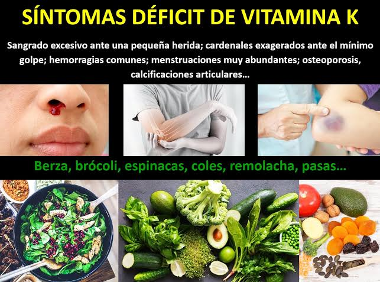
La vitamina K es esencial para la síntesis hepática de varios factores de coagulación dependientes de vitamina K: los factores II (protrombina), VII, IX y X, además de las proteínas anticoagulantes C y S.
🔍 Causas comunes:
- Dieta pobre en vegetales verdes.
- Malabsorción intestinal.
- Antibióticos que alteran flora intestinal.
- Uso de warfarina.
🩺 Manifestaciones
- Sangrado de encías, piel, orina, recién nacidos (si no reciben profilaxis).
🧪 Diagnóstico
- Tiempo de protrombina (TP) prolongado.
- TTPa puede ser normal o prolongado.
- Mejora rápida tras administración de vitamina K
💉 Tratamiento
- Vitamina K oral o parenteral (fitonadiona).
- Plasma fresco en sangrados graves.
🔴 Anticoagulantes circulantes
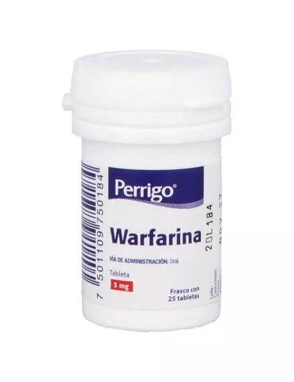
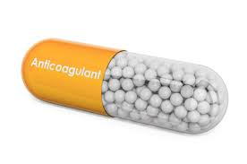
Son autoanticuerpos adquiridos que interfieren con la coagulación. No destruyen factores, pero bloquean su función. Pueden aparecer en enfermedades autoinmunes, infecciones o sin causa aparente.
Tipos principales:
- Anticoagulante lúpico: No causa sangrado, sino trombosis. Se asocia al síndrome antifosfolípido.
- Inhibidores contra factores: Como el factor VIII (hemofilia adquirida).
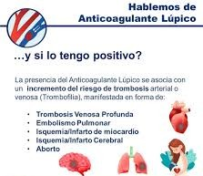
🧪 Diagnóstico
- TTPa prolongado sin corrección en mezcla.
- Ensayos específicos de anticuerpos.
- Niveles reducidos del factor inhibido
💉 Tratamiento
- Inmunosupresores (corticoides, ciclofosfamida).
- Factores bypass o recombinantes (Terapia de reemplazo).
- Tratar el trastorno de base.
🩸 HEMOFILIA A
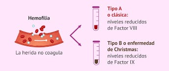
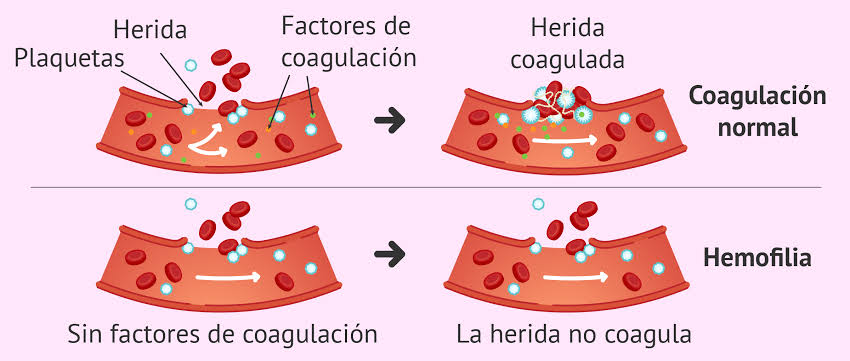
- Defecto: Déficit o disfunción del factor VIII.
- Gen afectado: F8 (ubicado en el cromosoma X).
- Prevalencia: Más común que la B (~80–85% de los casos).
🔬 Fisiopatología:
- El factor VIII normalmente se une al factor IXa en presencia de fosfolípidos y calcio para formar el complejo tenasa intrínseco, que convierte el factor X en Xa.
- Sin factor VIII funcional → no se activa adecuadamente el factor X → formación deficiente de trombina.
- Menor generación de trombina → fibrina insuficiente → coágulo inestable.
- Resultado: sangrados prolongados o espontáneos, sobre todo en articulaciones y músculos.
🩸 HEMOFILIA B (Enfermedad de Christmas)
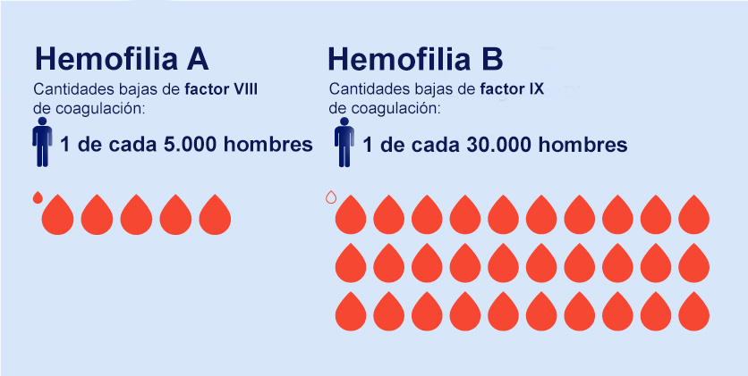
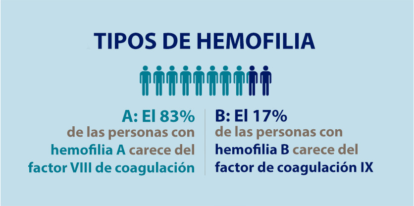
- Defecto: Déficit o disfunción del factor IX.
- Gen afectado: F9 (también en el cromosoma X).
- Prevalencia: Menos frecuente (~15–20% de los casos).
🔬 Fisiopatología:
- El factor IXa, junto con el factor VIIIa, forma el complejo tenasa intrínseco.
- Sin suficiente factor IX → no se forma el complejo → no se activa el factor X.
- Igual que en la hemofilia A, se produce poca trombina y fibrina → coágulo débil o ausente.
- Resultado clínico: igual al de la hemofilia A (hemartrosis, hematomas, sangrados prolongados).
🔬 Fisiopatología de la enfermedad de von Willebrand
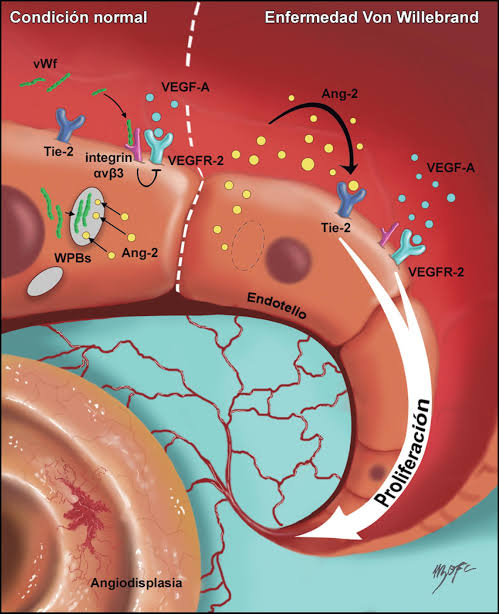
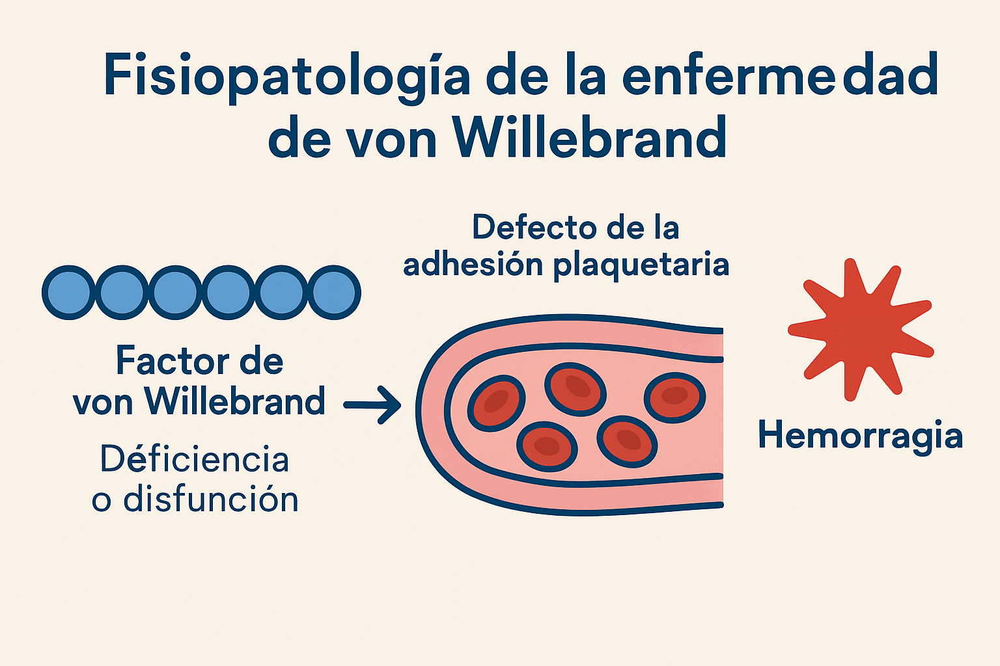
- Existe una deficiencia cuantitativa o cualitativa del factor de von Willebrand (FvW).
- El FvW es esencial para:
- La adhesión de las plaquetas al colágeno del endotelio lesionado mediante el receptor GPIb.
- La agregación plaquetaria secundaria, al unir plaquetas entre sí.
- La protección del factor VIII en plasma, evitando su degradación.
- Su deficiencia o alteración provoca:
- Hemostasia primaria: plaquetas no se adhieren eficazmente → tapón plaquetario débil.
- Hemostasia secundaria: al disminuir el factor VIII, se altera la cascada de coagulación → menor producción de trombina y fibrina.
- Resultado: sangrado prolongado, principalmente mucocutáneo (epistaxis, menorragia, sangrado postquirúrgico).
🧬 Fisiopatología del déficit de vitamina K
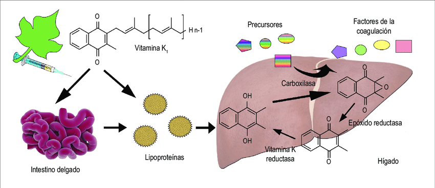
🟢 Función normal de la vitamina K:
Es esencial para la γ-carboxilación de residuos de ácido glutámico en los factores:
- Factores dependientes: II (protrombina), VII, IX, X.
- Proteínas anticoagulantes: C y S.
La carboxilación permite que los factores se unan al calcio (Ca²⁺) y a las membranas celulares para funcionar correctamente en la coagulación.
🔬 Fisiopatología del déficit:
- Sin vitamina K, no ocurre la carboxilación → los factores se sintetizan, pero están inactivos o disfuncionales.
- Resultado: los factores II, VII, IX y X no funcionan correctamente en la cascada de coagulación.
- Disminuye la formación de trombina (factor IIa) →
- ↓ Conversión de fibrinógeno en fibrina.
- ↓ Estabilización del coágulo.
- También hay déficit de proteínas C y S → riesgo de trombosis paradójica al inicio del tratamiento con warfarina (Antes de que bajen los factores Pro-Coagulantes).
© 2025 José Eduardo · Todos los derechos reservados